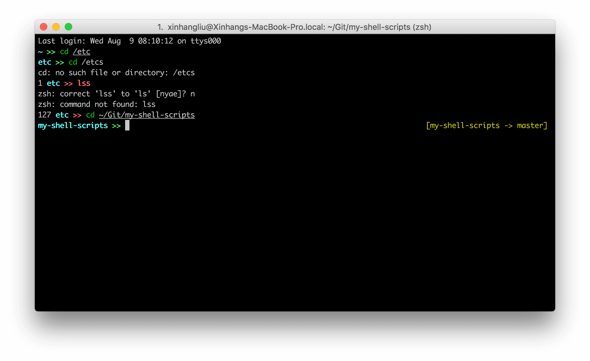
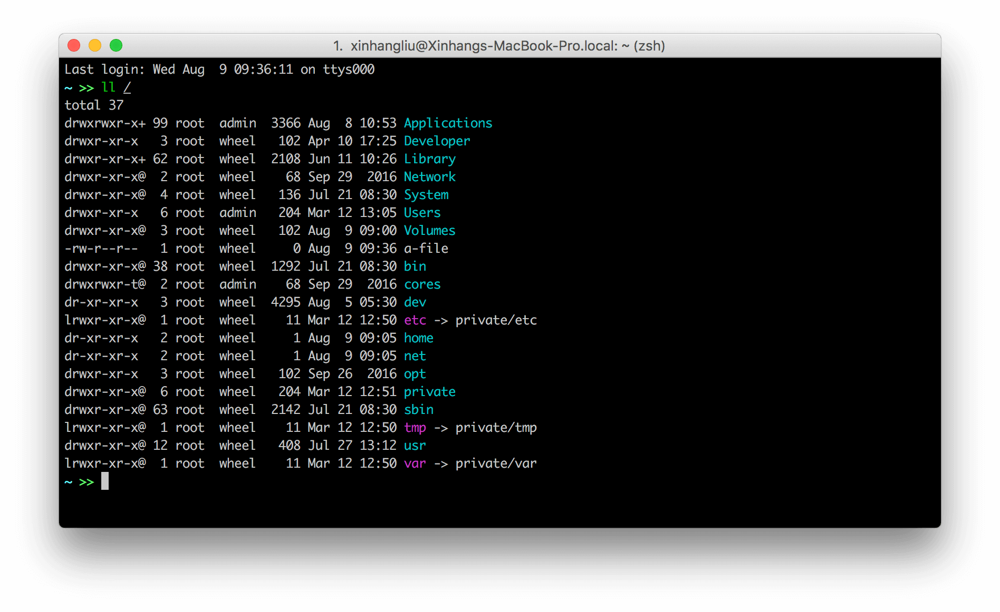
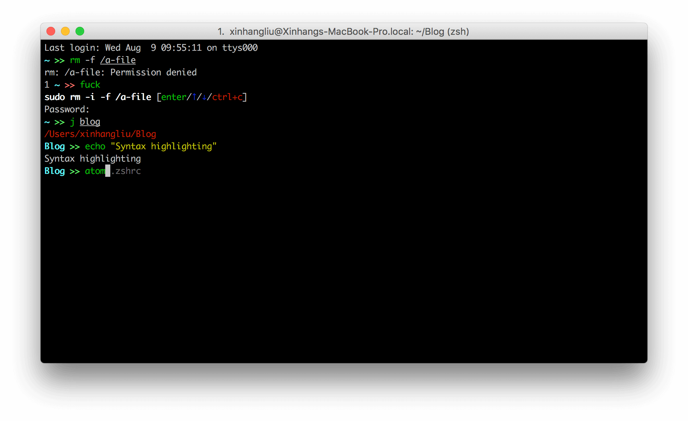

zsh 配置和使用
与 bash 相比，zsh 最让我喜欢的地方有命令补全、历史纪录搜索、提示符定制。这些功能 bash 都有，只不过 zsh 可定制性更高，可以配置出非常强大的功能。一开始，当然是选择使用 oh-my-zsh，它把配置 zsh 变得非常简单，同时还有非常多的主题、插件。但是一段时间用下来，我发现 zsh 启动速度非常慢。主题、插件确实多，但我真正会用到的也就那么几个。将适合自己的功能配置完成后，oh-my-zsh 中绝大多数的东西对我来说都是没用的。于是我萌生了自己配置 zsh 的想法。
配置 zsh 确实是一件非常繁琐的事情，我是在 Julien Voisin 的 .zshrc 基础上改的，同时结合了 oh-my-zsh 中一些配置。本文的配置适用于 macOS，如果要移植到 Linux 上需要改动一些细节。你可以在文末获取我的 .zshrc。
只需要一个 .zshrc 就可以包含我需要用到的功能，心理上觉得 zsh 清爽了很多。还有个好处是改善 zsh 的启动速度。
配置提示符
我的提示符非常简单，因为我不希望它太长，只有当前目录名和两个 >。主要功能：
- 当返回值不等于 0 时，会显示返回值，并且
>>会由绿色变为红色 - 切换为 root 用户之后，目录名由青色变为红色（Linux 下）
- 进入 git 目录，右侧显示 git 项目名和 branch

Git 提示符的配置：
# Vcs info ---------------------------------------------------------------------
# %s The current version control system, like git or svn.
# %r The name of the root directory of the repository
# %S The current path relative to the repository root directory
# %b Branch information, like master
# %m In case of Git, show information about stashes
# %u Show unstaged changes in the repository
# %c Show staged changes in the repository
autoload -Uz vcs_info
zstyle ':vcs_info:*' enable git svn hg
zstyle ':vcs_info:*' check-for-changes true
zstyle ':vcs_info:*' unstagedstr '!'
zstyle ':vcs_info:*' stagedstr '+'
zstyle ':vcs_info:*' formats "%{$fg[red]%}%u%{$reset_color%}%{$fg[green]%}%c%{$reset_color%} %{$fg[yellow]%}[%r -> %b]%{$reset_color%}"
提示符配置：
# Prompt -----------------------------------------------------------------------
setopt PROMPT_SUBST # allow funky stuff in prompt
local exit_color="%(?:%{$fg[green]%}:%{$fg[red]%})"
local dir_color='cyan'; [ $UID -eq 0 ] && user_color='red'
prompt="%(?..%? )%B%{$fg[$dir_color]%}%c $exit_color>>%{$reset_color%}%b "
RPROMPT='${vcs_info_msg_0_}'
如何控制提示符的格式，可以参考 ZSH - Documentation / Prompt Expansion
配置颜色
# Colors -----------------------------------------------------------------------
autoload -U colors && colors
export CLICOLOR=1
export LSCOLORS='gxfxcxdxbxegedabagacad'
export LS_COLORS="di=36:ln=35:so=32:pi=33:ex=31:bd=34;46:cd=34;43:su=30;41:sg=30;46:tw=30;42:ow=30;43"
LSCOLORS 是在 macOS 下用的，LS_COLORS 是在 Linux 下用的。macOS 下终端颜色的配置请参考 How to Fix Colors on Mac OSX Terminal。仅仅配置了颜色是不够的，需要给 ls 命令设置一个别名，开启颜色显示，macOS 下 alias ls="ls -G"，Linux 下 alias ls="ls —color=auto"。grep 同样需要设置一个别名 alias grep="grep --color=auto"。

配置历史纪录
oh-my-zsh 中最棒的一点是可以回溯以特定字符开头的历史纪录。输入 ls，然后按上下方向键，只会回溯 ls 开头的记录，而不会回溯所有的记录。这和 zsh 的 Key bindings 有关。
基本的历史纪录配置，来自 Juien Voisin：
# History ----------------------------------------------------------------------
HISTFILE="${HOME}/.zsh_history"
HISTSIZE=4096
SAVEHIST=4096
setopt append_history # Append
setopt hist_ignore_all_dups # Ignore duplicate
unsetopt hist_ignore_space # Ignore space prefixed commands
setopt hist_reduce_blanks # Trim blanks
setopt hist_verify # Show before executing history commands
setopt inc_append_history # Add commands as they are typed, don't wait until shell exit
setopt share_history # Share hist between sessions
setopt bang_hist # Keyword
只回溯特定字符开头的命令，来自 oh-my-zsh：
# Key bindings -----------------------------------------------------------------
# From oh-my-zsh
if (( ${+terminfo[smkx]} )) && (( ${+terminfo[rmkx]} )); then
function zle-line-init() {
echoti smkx
}
function zle-line-finish() {
echoti rmkx
}
zle -N zle-line-init
zle -N zle-line-finish
fi
bindkey -e # Use emacs key bindings
bindkey '\ew' kill-region # [Esc-w] - Kill from the cursor to the mark
bindkey -s '\el' 'ls\n' # [Esc-l] - run command: ls
bindkey '^r' history-incremental-search-backward # [Ctrl-r] - Search backward incrementally for a specified string. The string may begin with ^ to anchor the search to the beginning of the line.
if [[ "${terminfo[kpp]}" != "" ]]; then
bindkey "${terminfo[kpp]}" up-line-or-history # [PageUp] - Up a line of history
fi
if [[ "${terminfo[knp]}" != "" ]]; then
bindkey "${terminfo[knp]}" down-line-or-history # [PageDown] - Down a line of history
fi
# start typing + [Up-Arrow] - fuzzy find history forward
if [[ "${terminfo[kcuu1]}" != "" ]]; then
autoload -U up-line-or-beginning-search
zle -N up-line-or-beginning-search
bindkey "${terminfo[kcuu1]}" up-line-or-beginning-search
fi
# start typing + [Down-Arrow] - fuzzy find history backward
if [[ "${terminfo[kcud1]}" != "" ]]; then
autoload -U down-line-or-beginning-search
zle -N down-line-or-beginning-search
bindkey "${terminfo[kcud1]}" down-line-or-beginning-search
fi
if [[ "${terminfo[khome]}" != "" ]]; then
bindkey "${terminfo[khome]}" beginning-of-line # [Home] - Go to beginning of line
fi
if [[ "${terminfo[kend]}" != "" ]]; then
bindkey "${terminfo[kend]}" end-of-line # [End] - Go to end of line
fi
bindkey ' ' magic-space # [Space] - do history expansion
bindkey '^[[1;5C' forward-word # [Ctrl-RightArrow] - move forward one word
bindkey '^[[1;5D' backward-word # [Ctrl-LeftArrow] - move backward one word
if [[ "${terminfo[kcbt]}" != "" ]]; then
bindkey "${terminfo[kcbt]}" reverse-menu-complete # [Shift-Tab] - move through the completion menu backwards
fi
bindkey '^?' backward-delete-char # [Backspace] - delete backward
if [[ "${terminfo[kdch1]}" != "" ]]; then
bindkey "${terminfo[kdch1]}" delete-char # [Delete] - delete forward
else
bindkey "^[[3~" delete-char
bindkey "^[3;5~" delete-char
bindkey "\e[3~" delete-char
fi
# Edit the current command line in $EDITOR
autoload -U edit-command-line
zle -N edit-command-line
bindkey '\C-x\C-e' edit-command-line
# file rename magick
bindkey "^[m" copy-prev-shell-word
配置命令补全
# Completion -------------------------------------------------------------------
autoload -U compinit # Completion system initialization
compinit
zmodload -i zsh/complist
setopt hash_list_all
setopt completealiases
setopt always_to_end
setopt complete_in_word
setopt correct
setopt list_ambiguous
zstyle ':completion::complete:*' use-cache on # completion caching, use rehash to clear
zstyle ':completion:*' cache-path "${HOME}/.zsh/cache" # cache path
zstyle ':completion:*' menu select=2 # menu if nb items > 2
zstyle ':completion:*' list-colors ${(s.:.)LS_COLORS}
zstyle ':completion:*::::' completer _expand _complete _ignored _approximate # list of completers to use
zstyle ':completion:*' accept-exact '*(N)'
zstyle ':completion:*:*:kill:*' menu yes select
zstyle ':completion:*:kill:*' force-list always
zstyle ':completion:*:*:killall:*' menu yes select
zstyle ':completion:*:killall:*' force-list always
安装插件
插件非常影响 zsh 的启动速度，我只安装了几个非常顺手的。
- The fuck：非常爽快的命令纠错
- Autojump：非常爽快的目录跳转
- Zsh syntax highlighting：zsh 命令语法高亮
- Zsh auto suggestions：类似于 fish 的命令建议
手动安装以上插件即可，然后在 .zshrc 中启用：
# The fuck
eval $(thefuck --alias)
# Autojump
[ -f /usr/local/etc/profile.d/autojump.sh ] && . /usr/local/etc/profile.d/autojump.sh
# Zsh syntax highlighting
source /usr/local/share/zsh-syntax-highlighting/zsh-syntax-highlighting.zsh
# Zsh auto suggestions
source ~/.zsh/zsh-autosuggestions/zsh-autosuggestions.zsh
